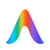
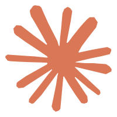
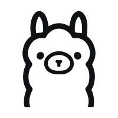
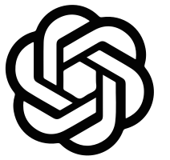

零代码 SOP 画布，LangGraph 在 localhost 运行。编排、监督、审批，一屏完成。




已路由的本地引擎
在现有 CLI 之上加控制层，不替代生成能力。
拖拽节点编译为状态机，输出自动接力。
Chat、终端、Diff、Flow、文件树。
高风险写入挂起，Approve / Reject / Retry。
多会话并行，CLI 串行，池满排队。
Engine Router 按节点分流到已安装的本地工具。
WebSocket 推送 ClutchState，Chat、终端、Diff、Flow 同屏投影。
敏感写入挂起 human_required，监督者一键 Approve / Reject / Retry。
Agent 请求写入 services/orchestrator/src/main.py，是否放行？
services/orchestrator/src/main.py
多 Flow 并行对话，CLI 引擎串行占用，池满自动排队。
Sidecar 跑在 localhost:8123，密钥进系统钥匙串。
首次启动有设置向导，约 5 分钟跑通第一个 Flow。
curl -fsSL https://raw.githubusercontent.com/fancy1108/Clutch/main/scripts/install.sh | bash
irm https://raw.githubusercontent.com/fancy1108/Clutch/main/scripts/install.ps1 | iex